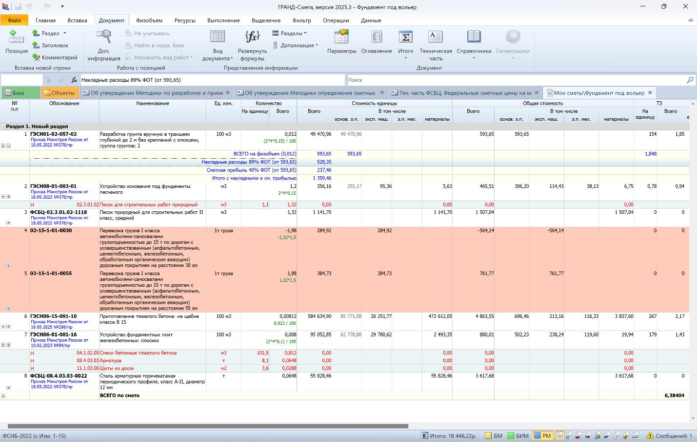

Накладные расходы

Накладные расходы (НР) – это затраты, которые включают административные и хозяйственные расходы, обеспечение условий труда сотрудников, организацию строительства на объектах и прочие расходы, которые не связаны напрямую с производством отдельного изделия или услуги.
Что включают в себя НР
- Аренда и содержание помещений.
- Амортизация основных средств.
- Заработная плата административно-управленческого персонала – директора, бухгалтера, ИТР, линейного персонала (прораба, мастера и т.д.).
- Создание нормальных условий труда.
- Затраты на рекламу.
- Оплата информационных, консультационных, юридических услуг.
- Затраты на почту, телефон, интернет.
- Затраты на материалы для офиса.
- Командировочные и представительские затраты.
- Геодезические работы.
- Износ и расходы по ремонту инструментов и производственного инвентаря и т.д.
Какие затраты не учтены в НР и учитываются дополнительно
Расходы на временные здания и сооружения (кроме нетитульных), которые необходимы для осуществления производства, рассчитываются согласно утвержденным сметным нормам, включенным в Федеральный реестр сметных норм (ФРСН), и учитываются в восьмой главе сметы «Временные здания и сооружения».
Расходы, учитываемые в главе 9 «Прочие работы и затраты» сводного сметного расчета стоимости строительства (ССРСС):
- Затраты, которые связанные с выполнением работ вахтовым способом,
- Затраты, которые возникают при перемещении подрядчиков и их подразделений на новые строительные объекты.
Оба вида затрат, главы 8 и главы 9, определяются исходя из сметных норм, внесенных в Федеральный реестр сметных норм (ФРСН).
Согласно Приказу от 21 декабря 2020 г. № 812/пр «Об утверждении методики по разработке и применению нормативов накладных расходов при определении сметной стоимости строительства, реконструкции, капитального ремонта, сноса объектов капитального строительства» нормативы накладных расходов выражаются в процентах от фонда оплаты труда (ФОТ) работников строительных специальностей, включая строителей и машинистов, входящих в сметные прямые затраты.
Например, размер НР для разработки грунта вручную составляет 89% от ФОТ:

В каждой расценке, по каждому виду работ, размер накладных расходов разный.
Прямые затраты + Накладные расходы
=
Себестоимость